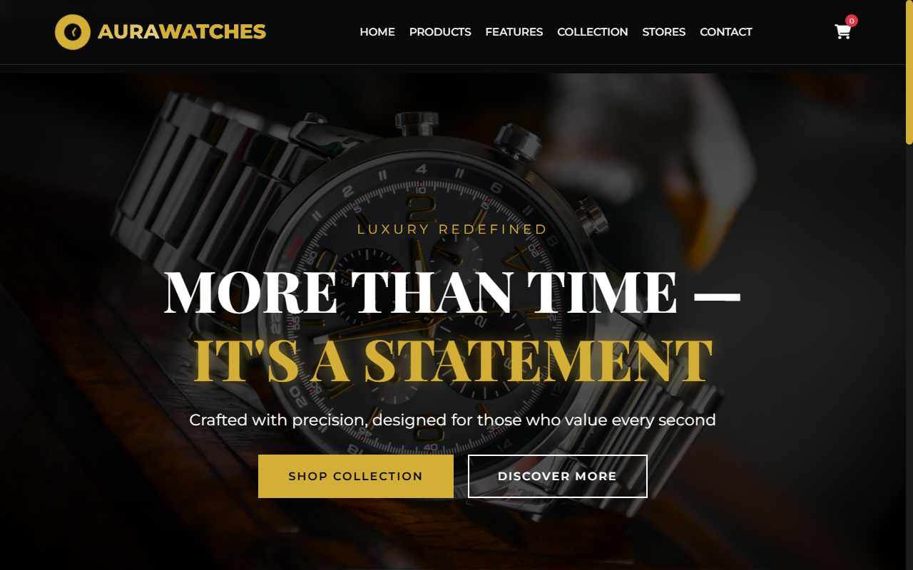

Luxury E-Commerce
Full-Stack Web Developer • Karachi, Pakistan
TAYYAB FAISAL
Full-Stack Web Developer
Engineering scalable web applications, robust backends, and responsive digital interfaces with PHP, Laravel, MySQL, Java, and modern JavaScript. Advancing in ACCP AI at APTECH with disciplined commercial accuracy.